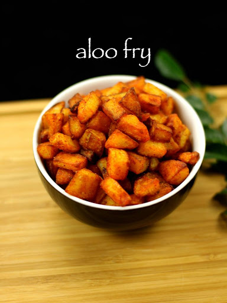

Makinga, potato fry delicious is not so easy and not so difficult either. All we need to know is step by step procedure . Below are the ingredients needed.
This is very tasty, you can serve this with your family without any tension.
Click here to see full video.